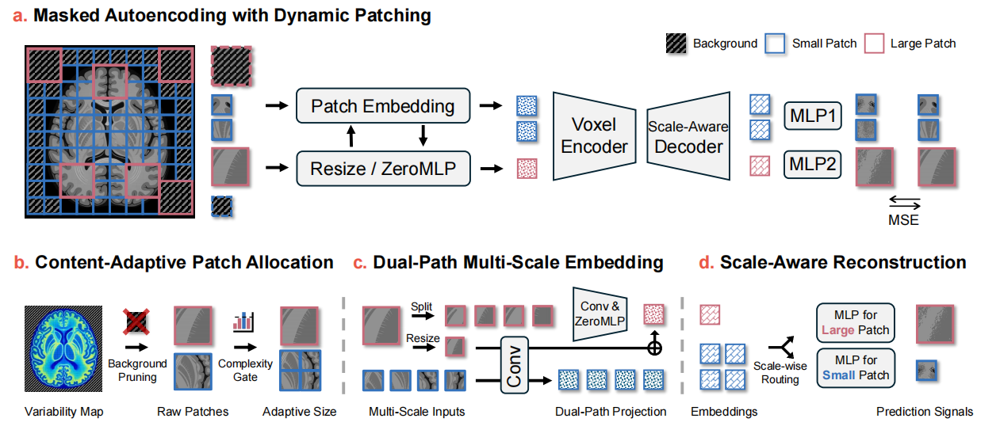
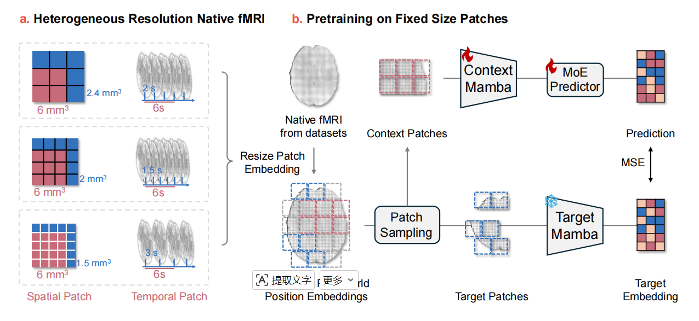
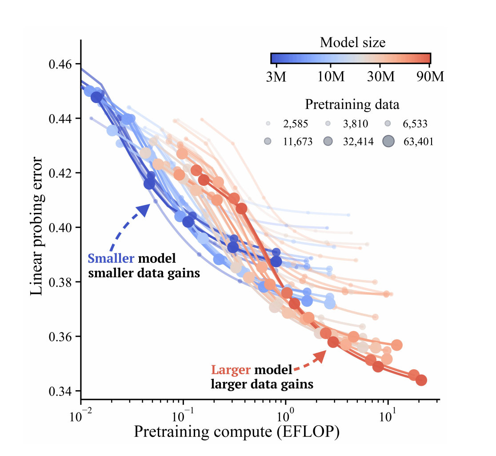

Omni-fMRIOmni-fMRI: A Universal Atlas-Free fMRI Foundation Model
Dynamic patching enables efficient, atlas-free representation learning directly from voxel-level fMRI.
I study how we can learn useful representations from the human brain.
I am an undergraduate in Biomedical Engineering at Shenzhen University, and a visiting research student at the Neural Computing and Control (NCC) Lab, SUSTech, advised by Prof. Quanying Liu. I also have the opportunity to collaborate with Prof. Hongkai Wen and Prof. Jianfeng Feng at Fudan University and the University of Warwick.
My research focuses on NeuroAI, particularly foundation models and representation learning for fMRI. I am also exploring trustworthy AI systems with JEPA and uncertainty-aware learning.
More work from our team: fMRI Atlas
* Equal contribution · † Corresponding author

Omni-fMRIDynamic patching enables efficient, atlas-free representation learning directly from voxel-level fMRI.

FlexiBrainPhysical-unit patching and Mamba-JEPA learn native-space fMRI representations across different acquisition resolutions.

Scaling fMRI modelsA controlled scaling study reveals how data size, model capacity, and training duration jointly affect fMRI performance.